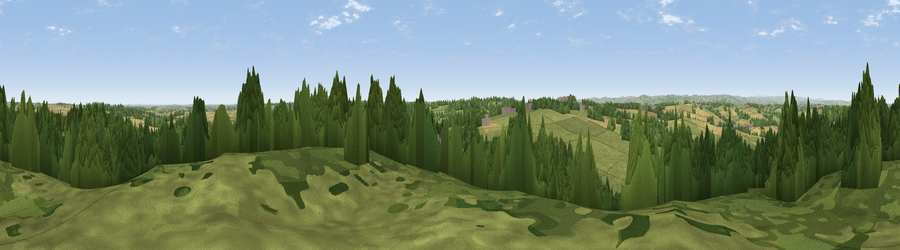

Silverhill
#22937 in England · top 27% of its area beats it · near FackleyThe view, rendered

A 360° render of this exact spot computed from the terrain model, tree cover and land cover — summer colours, afternoon light, calibrated against photographs of famous viewpoints. Real trees, hedges and buildings will differ in detail.
The panorama
Grey silhouette: terrain skyline in each direction (720 bearings, Earth curvature and refraction included). Dashed green: skyline with trees (+15 m) and buildings (+8 m) as obstacles. Blue strip: how far the ground is visible on each bearing.
Where the view opens
Wedge length = distance to the farthest visible ground on that bearing (vegetation-aware). Rings at 10, 25 and 50 km.
What fills the view
42% woodland · 40% grassland · 14% cropland · 3% built-up
Angular shares of the visible panorama (visual magnitude), not map area. Landscape diversity 0.49 (0–1 Shannon).
Key numbers
More beautiful places nearby
The staircase of upgrades: each row has a higher view potential than everything closer. Driving times are estimates from straight-line distance, calibrated against real road routing — check an actual route before setting out.
| Place | Direction | Drive | Score |
|---|---|---|---|
| Viewpoint near Tibshelf | SW · 2 km | ~6 min | 53.2 |
| Viewpoint near Stainsby | NNW · 3 km | ~7 min | 53.9 |
| Viewpoint near Palterton | N · 6 km | ~13 min | 58.5 |
| Viewpoint near Palterton | N · 7 km | ~14 min | 59.9 |
| Viewpoint near Bolsover | N · 9 km | ~18 min | 60.4 |
| Viewpoint near Alton | W · 11 km | ~21 min | 67.7 |
| Viewpoint near Brackenfield | WSW · 12 km | ~22 min | 68.3 |
| Crich Stand | WSW · 14 km | ~26 min | 73.0 |
53.15419, -1.29750 · source: osm peak · position refined by local search. Computed location — check access rights before visiting.